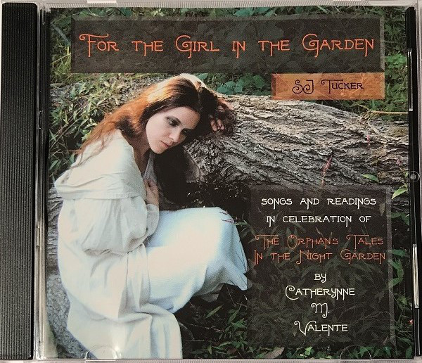

list of old issues
Drei Cafe #4
Philip K Dick maybe??? / Valente / Big Head
Hi,
Every weekday I wake up at 6am to a clock radio playing The Breakfast Spread show on PBS. The presenter is called Milo (yes), he spins a 3 hour mix just for you and me. Milo starts us off with some gentle ambient music and then he takes our sleepy hand and the journey begins, hold on! Or so I'm told, I only listen to the first half hour and then I'm off writing. His sweet gentle music is the calm confident hand of a friend shaking you awake, I love waking up to it and I'll forever associate it with lockdown.
PBS is a community radio station here in Melbourne. There's another one here called Triple R, it's good too but not as good (sorry!), I think of it as the more 'talky' one. For a while I used to wake up to Triple R breakfast show news, I don't know why. Listening to the news in the day's first moments of consciousness is an awful way to treat yourself!
Triple R morning news reached its zenith/logical conclusion/an-und-für-sich in March, when I woke up to the show interviewing some bloke about Coronavirus, I think a doctor. I'd never heard a more panicked person on the radio in my life, you'd think they'd just pulled him out of a burning house, at one stage I legit thought he was having a panic attack. The poor man talked rapidly, I don't remember exactly what he said, something about the government not doing enough to combat coronavirus. I mostly remember how he said it, and how the radio announcers kept asking questions in these "we are very concerned and respect your authority" tones, instead of scrambling for the workplace first aid officer. I switched the clock radio to PBS that day and haven't switched it back since. This is not a comment on whether the man was correct or mistaken, mind. I just wanted to tell you about the worst way I've ever woken up.
I AM READING A STORY
When I was a kid in Russia I remember some cool older kids telling me about a sci-fi short story they read. It's about this creature who lives on some planet, and this guy who's a farmer on that planet. The creature, it's an animal, it's pretty dumb — unless its life is in danger. The more danger it is in, the more smart it is! If it's in enough danger it can even talk.
So the creature's been tearing up the farmer's crops, the farmer goes out there with a space shotgun to threaten it. "Get away from my space carrots you vermin!". But then something dangerous happens — maybe a huge earthquake?? And the creature and the farmer have to work together to survive! And because they're in danger, the creature goes clever, and they become friends!
It's a tragic end of course. They return to safety and the farmer finds his creature-friend fading to its old stupid non-communicative self. "Please remember me," the creature asks as it fades. "Maybe I'll recall a little bit of our friendship, when you come out with your space shotgun to chase me away."
I wonder how much was actually a short story, and how much of it the older kids made up, and how much my own mind made up in recollection. If you know the original story, please don't tell me about it! The version in my head is just fine.
I still often think of that poor creature, in a way it's a "losing much your mind" thing, isn't it. I find it so sad. There's a bit in a Terry Pratchett novel where a troll sits in a fridge and thinks smart thoughts because trolls are only smart in cold places. I don't remember the rest of the novel but I remember that scene vividly.

There's this author, Catherynne Valente, she's super popular. She writes lush baroque fantasy. I read a couple of her books, didn't really vibe with them. People really care about her work, though, which is all you want as a writer I reckon. Look above — someone made a CD inspired by a novel of hers! Yeah it's a tad aesthetically dorky, so what, a person cared enough about a book to make a CD about it, that's bloody ace. Valente likes to do this narrator voice of yes, we know this is how the world is, don't we my sweet, my sweet little reader, it's quite effective if you click with that sort of thing. I don't, but criticising Valente for it is like criticising James Hetfield (Metallica guy) for playing a distorted guitar and going "yeee-aaaurgh". Anyway there's one thing she wrote, that I read without realising it was her, without even realising it was a writer writing a story, that I absolutely loved.
It's a short article about Killswitch, an obscure and incredibly difficult computer game made by a small Eastern European company. The article's no longer around but the Wayback Machine has it: https://web.archive.org/web/20171129061320/http://invisiblegames.net/?p=11
It's just so genuinely lovely! Apparently, the story spread across the 'net like an urban legend, tonnes of people tried to re-write it, add to it, someone even tried to re-make the mentioned game, why?? That original article is where it's at, stop there, everything else sucks and is dull. The article is simply a small overview of a strange Czech puzzle computer game and a mystery it poses. It's a gem.
HAVING A BIG HEAD
When I was in undergrad I worked at a supermarket deli. We had one-size-fits-most hats. My head was not 'most'. If I bent down, the hat would fall off and slap into a ham, so I had to wear a hairnet, which was actually quite comfortable and more dignified than you'd think. As life went on, my oversized head stopped being a workplace issue, but recently it's become a workplace issue again.
I got this headset for work meetings, it's got a mic, it folds down the side right by your mouth (in theory). When I zoom with colleagues, everyone else drops their mics down, but my head is so bi the options available to me are 'pressing hard against cheek', 'poking in the eye', or 'up against hair'. I wore it for a meeting recently, I took the hair option, but forgot to switch over to the laptop mic. Everyone was like your audio is awful, why is there a noise when you tilt your head? "NBN problems, stupid lockdown internet, ha ha ha let me reconnect". Anyone want to trade heads?
PERSONAL LIFE
A helicopter passes over my house each night. It probably passes over your house too if you're in Melbourne. Isn't it creepy??
Hope you're good bye!
Bye,
Drei
29 Aug 2020
If you like this and have a mate who you reckon might like this, please send them to www.dreicafe.com where I have a sign up sheet for this newsletter! There is also a link to old issues there !!!
© 2020 Drei Cafe